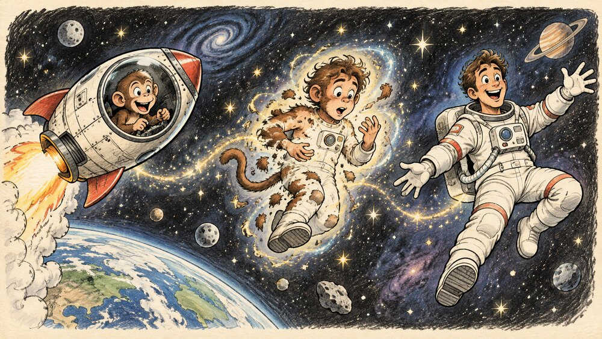

About Me
I am a creative director, visual effects supervisor, and digital media master's student. I bring images to life. I try to bring what's in your mind alive.

My Origin Story
I started with drawing and animation, then moved into visual effects and academic research. One day, I asked, "What if a painting could move in the real world?" Now I keep inventing projects that refuse to stay inside their frames.
My Skills
- Animation: making characters and objects move.
- Visual effects: making impossible things look real in film and broadcast.
- Problem solving: finding another way when technology refuses to cooperate.
I also enjoy building worlds with Unreal Engine.